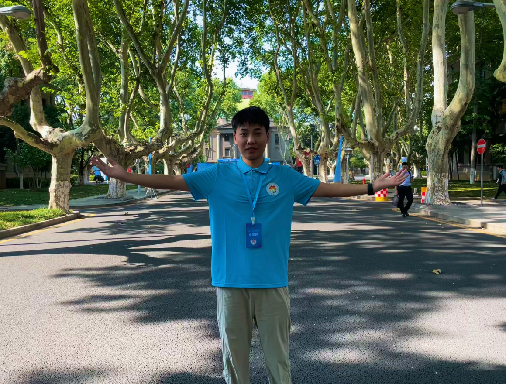

About me
👋 I’m Qiu Can, a senior undergraduate passionate about open-source and cutting-edge technologies
📍 Based in Beijing | Currently studying at CAU
🎓 B.Eng. Candidate in CIEE, CAU | Incoming M.S. Candidate at SKLOIS, UCAS
💡 Research Interests: Processor Security • LLM Inference
